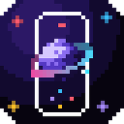

Arraste para navegar · Toque para OK

No iPhone, você pode abrir o Controle diretamente pelo servidor da TV para resposta instantânea sem limites de rede:
Abrir Controle Web na TVO texto será digitado no campo de busca ou no campo aberto na TV.
Para usar o Onix Controle em tela cheia como um aplicativo:
1. Toque em Compartilhar ⎋ no Safari.
2. Escolha Adicionar à Tela de Início ➕.